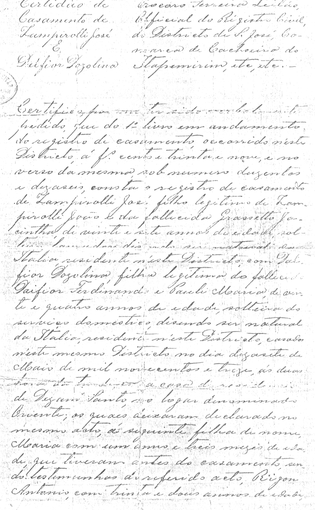
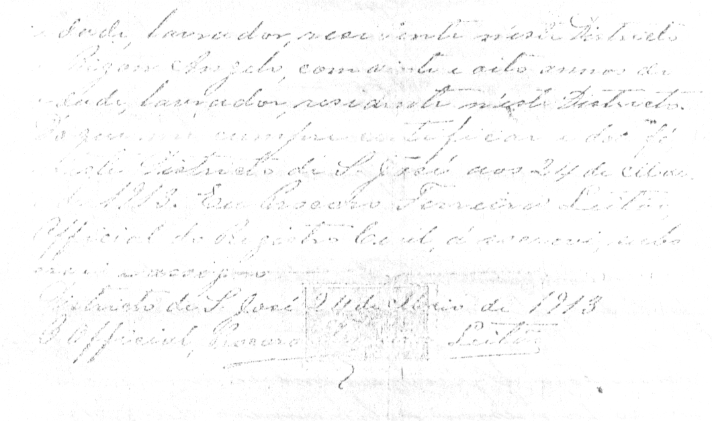
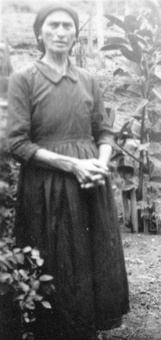
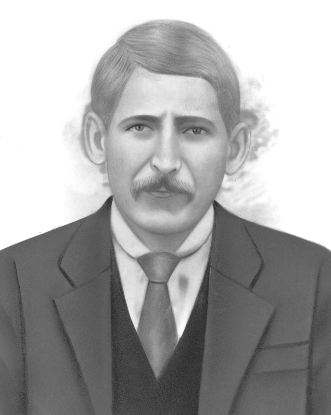
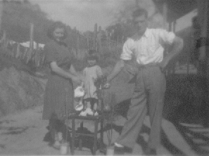

Jose
Ver na árvore interativa ✏️ Sugerir correção ➕ Acrescentar filho(a) 📷 Enviar foto ou documento
Dados
- Nome no registro italiano
- Mustolo
- Nascimento
- ~ 1886 na Itália
- Cônjuge
- Dosolina Dalfiôr (~ 1888) natural da Itália, filha de Ferdinando Daifior e Maria Pauli
- Casamento
- 24/05/1913 no distrito de São José, comarca de Cachoeiro do Itapemirim. Ela com 24 anos e ele com 27 anos.
- Última residência na Itália
- Ca' Emo
- Província de origem
- Rovigo
- Navio
- Adria
- Chegada ao Brasil
- 31/12/1888
- Idade na chegada
- 2
- Pais
- Giovanni e Gacintha Grassetto
- O casamento religioso ocorreu em 17/05/1913 (sábado) às 14h no lugar denomindo Oriente na casa de residência de "Dezam Santo".
Família
Filhos (9)
- Maria ~1912 †
- Jacinta⚭ Sebastião Partelli · 7 filhos
- Antonio⚭ Osilia Balarini · 7 filhos
- Afonso⚭ Arminda Curitiba · 11 filhos
- Luiz †
- Josefina⚭ Rafael Monteiro · 6 filhos
- Domingos 1925⚭ Rosalina Balarini · 11 filhos
- Rosa⚭ Aristides Basso · 5 filhos
- Benjamim⚭ Lucia D'angeles · 6 filhos
Irmãos (5)
- Maria Regina⚭ João Cipriano
- Angelo⚭ Carolina Jacomelli · 5 filhos
- Cesar⚭ Maria Zanette · 3 filhos
- Amalia⚭ Bortolo Partelli
- Francisco⚭ Tereza Jacomelli · 4 filhos
Todos os descendentes (94)
- Maria ~1912 †
- Luiz †
Domingos 1925 ⚭ Rosalina Balarini 34
Lourdes 1951 ⚭ Wilton Gomes Costa Sobrinho 2
- Ilario 1952 †
- Luzia 1957 †
Braz 1958 ⚭ Helena Pereira 2
- Brunelly Pereira 1986
- Fabricio 1999
Fernando 1960 ⚭ Maria do Carmo Batista Zampirolli 2
- Filipe Batista 1987
- Alice Batista 1991
Joao Bosco 1962 ⚭ Lúcia neves gomes 2
- Igor Nevex 1987
- Ivan Neves 1992
Reinaldo 1964 ⚭ Alzira Rocha Dias 4
- Josiane Dias Neves 1987
- Natani 1994
- Alan Pablo Dias 1994
- Douglas Sennas Dias Galiasso 1997
Maria Salete 1965 ⚭ Carlos Alberto Diniz Aguiar 4
Francisco de Assis 1968 ⚭ Cristina Baptista Moura 2
Rosa ⚭ Aristides Basso 5
Fotos










Contexto histórico
Informações sobre lugares e fatos citados acima, pesquisadas em fontes públicas na web. Não são dados pessoais desta pessoa.
Contexto histórico A grande emigração do Vêneto (1875–1914)
Entre 1876 e 1900 mais de cinco milhões de italianos deixaram o país; o Brasil esteve entre os principais destinos. No Vêneto, a principal causa foi a crise agrária provocada pela chegada de trigo barato das Américas e da Rússia, somada à pressão demográfica e à crise da pequena propriedade. Cerca de 1,4 milhão de italianos vieram ao Brasil em 50 anos, a partir de 1874.
Chegada ao Brasil Imigração italiana no Espírito Santo
A imigração italiana para o Espírito Santo começou em 17/02/1874, com a chegada do veleiro La Sofia ao porto de Vitória, trazendo 388 italianos. Entre o fim do século XIX e o início do XX chegaram ao estado cerca de 45 mil italianos, quase todos camponeses, muitos partindo de Gênova. O Arquivo Público do Estado (APEES) mantém o banco de dados "Imigrantes Espírito Santo", com dezenas de milhares de nomes, onde é possível pesquisar as listas de passageiros e pedir certidão de desembarque — útil para a cidadania italiana.
Onde a família viveu Cachoeiro de Itapemirim (ES)
O pequeno povoado foi declarado núcleo paroquial em 1856 e tornou-se um município importante no fim do século XIX, impulsionado pelo café, pela pecuária e pelas jazidas de mármore. Estudos demográficos mostram que a contribuição dos imigrantes italianos foi decisiva para a economia da região.
Pasta de origem: 01Giacomo/02Giovanni/01Jose/